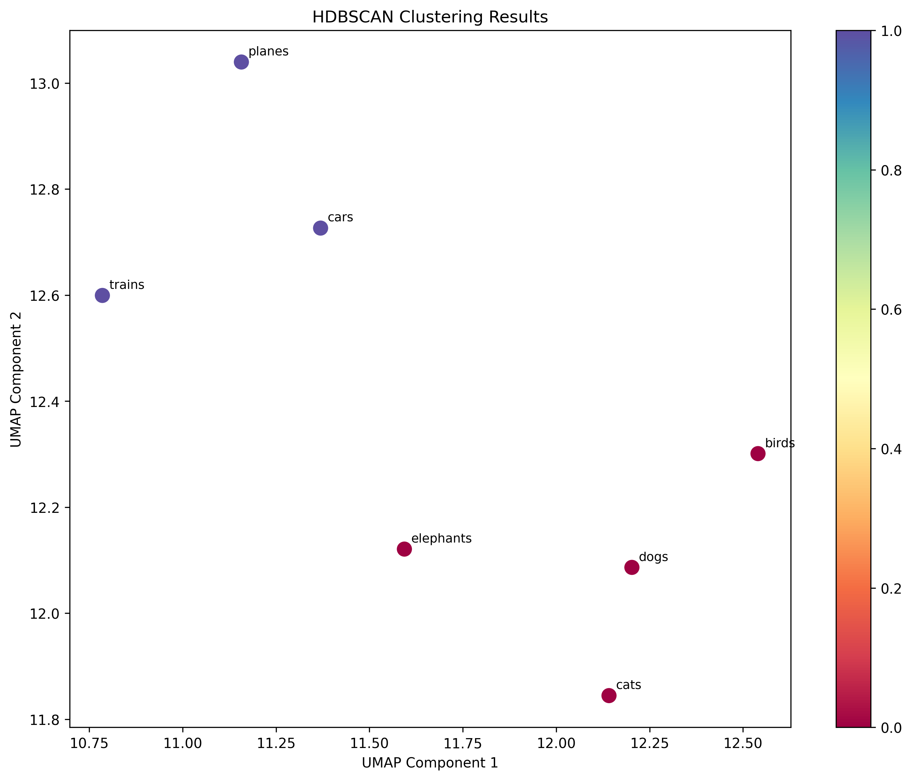

To simplify, I used one-word sentences in this example.
For real-world applications, you would typically work with documents.
Install the required modules:
$ pip install umap-learn
$ pip install hdbscan
$ pip install matplotlib
$ pip install numpy
Python code:
$ vi clustering.py
from sentence_transformers import SentenceTransformer
from umap import UMAP
from hdbscan import HDBSCAN
import matplotlib.pyplot as plt
import numpy as np
# load embedding model
embedding_model = SentenceTransformer("sentence-transformers/all-MiniLM-L12-v2")
# generate embeddings
texts = ['cats', 'dogs', 'elephants', 'birds', 'cars', 'trains', 'planes']
embeddings = embedding_model.encode(texts)
print(f'Number of embedded documents and their dimensions: {embeddings.shape}')
# reduce the embeddings dimensions
reduced_embeddings = UMAP(n_components=5, random_state=42).fit_transform(embeddings)
print(f'Number of embedded documents and their reduced dimensions: {reduced_embeddings.shape}')
# create an hdbscan object and fit the model to the data
cluster_labels = HDBSCAN(min_cluster_size=2, metric='euclidean').fit_predict(reduced_embeddings)
# get the number of clusters (excluding noise points labeled as -1)
n_clusters = len(set(cluster_labels)) - (1 if -1 in cluster_labels else 0)
n_noise = list(cluster_labels).count(-1)
print(f'Number of clusters: {n_clusters}')
print(f'Number of noise points: {n_noise}')
# print cluster results
for cluster_id in set(cluster_labels):
if cluster_id == -1:
print(f"\nNoise points:")
else:
print(f"\nCluster {cluster_id}:")
cluster_indices = np.where(cluster_labels == cluster_id)[0]
for index in cluster_indices:
print(f'- {texts[index]}')
# plot the results (using first 2 components for visualization)
plt.figure(figsize=(10, 8))
scatter = plt.scatter(reduced_embeddings[:, 0], reduced_embeddings[:, 1],
c=cluster_labels, cmap='Spectral', s=100)
plt.colorbar(scatter)
plt.title('HDBSCAN Clustering Results')
plt.xlabel('UMAP Component 1')
plt.ylabel('UMAP Component 2')
# annotate points with text labels
for i, text in enumerate(texts):
plt.annotate(text, (reduced_embeddings[i, 0], reduced_embeddings[i, 1]),
xytext=(5, 5), textcoords='offset points', fontsize=9)
plt.tight_layout()
plt.savefig('hdbscan_cluster_plot.png', dpi=300, bbox_inches='tight')
print("\nPlot saved as 'hdbscan_cluster_plot.png'")
Run the Python script:
$ python3 clustering.py
Output:
Number of embedded documents and their dimensions: (7, 384)
Number of embedded documents and their reduced dimensions: (7, 5)
Number of clusters: 2
Number of noise points: 0
Cluster 0:
- cats
- dogs
- elephants
- birds
Cluster 1:
- cars
- trains
- planes
Plot saved as 'hdbscan_cluster_plot.png'
Chart of the clusters: hdbscan_cluster_plot.png
